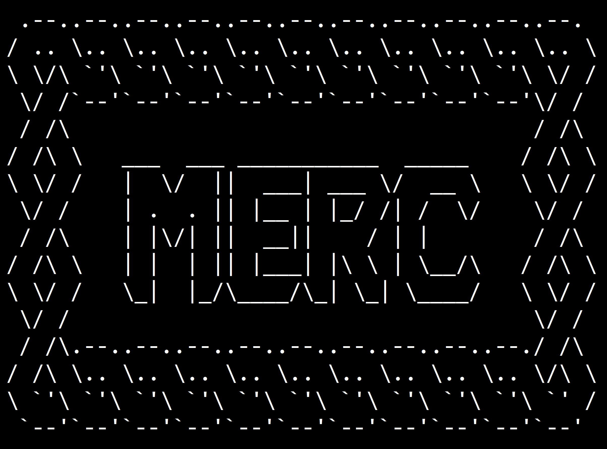

Projects
Acolytes Media
Acolytes
Pitched and secured faculty greenlight for an original roguelike tactical combat/deckbuilder Major Qualifying Project, selected as one of only 7 student pitches to enter pre-production.
Served as recruiter and producer for a 5-person multidisciplinary team of artists, programmers, and designers, managing core design documentation and project scope.

Arena
Developed a multi-genre action game in Godot that seamlessly transitions players between randomized levels featuring turn-based RPG, tactical, top-down shooter, and platformer mechanics.
Engineered a global state-management system to apply persistent player upgrades (Health, Speed, Attack) dynamically across four distinct control schemes and gameplay loops.

Merc
Engineered a narrative state-machine in Twine utilizing custom HTML/CSS to manage dynamic variables for branching morality paths and persistent companion approval metrics.
Built a 29,828-word interactive story with 117 passages and 106 linked choices.

Simple RPG
Programmed a classic turn-based JRPG prototype in Godot to evaluate core engine architecture, implementing tile-based overworld exploration, trailing party movement, and step-driven random encounters.
Engineered a speed-ordered combat system featuring persistent party status tracking across battles, stat-modifying equipment menus, and dynamic battle UI.